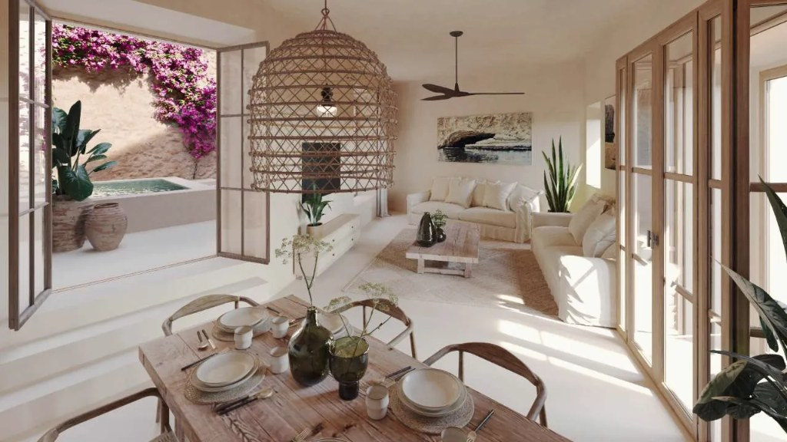

Villa Mediterránea 3D
Generando iluminación global y materiales PBR…

⇄
Comparar escena 3D con imagen original
Referencia Original
Escena 3D en Tiempo Real
1 · Vista Original
2 · Comedor
3 · Salón
4 · Patio y Alberca
5 · Galería
Modo: Caminar
Calidad: Rápida
Ventilador: ON
Comparar Foto
?
▲
◀
▼
▶
WASD / Flechas
o
clic en el suelo
para desplazarte
·
Arrastra
para mirar
·
Shift
ir rápido
·
R
vista exacta original
Navegación por la Villa Mediterránea
Desplazamiento libre:
Usa
W
A
S
D
, las
Flechas
o los botones direccionales en pantalla para caminar por el comedor, el salón, subir los escalones hacia el patio de la alberca o recorrer la galería acristalada.
Caminar con un clic:
Haz clic breve sobre cualquier punto del suelo, alfombra, escalones o terraza exterior para desplazarte suavemente hasta allí.
Mirar alrededor:
Mantén pulsado y arrastra con el ratón (o dedo en pantallas táctiles) en cualquier dirección.
Velocidad y altura:
Mantén
Shift
para caminar más rápido, y
E
/
Q
para ajustar sutilmente la altura de visión.
Modo Órbita (
O
):
Cambia a cámara orbital para inspeccionar detalles artesanales de cerca con la rueda del ratón.
Comparador 1:1 (
C
):
Activa la cortina interactiva para superponer la fotografía original con el render 3D en tiempo real desde la
Vista Original
(
1
o
R
).
Explorar escena